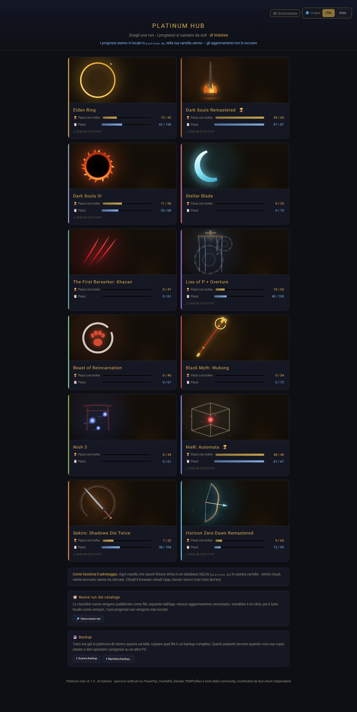
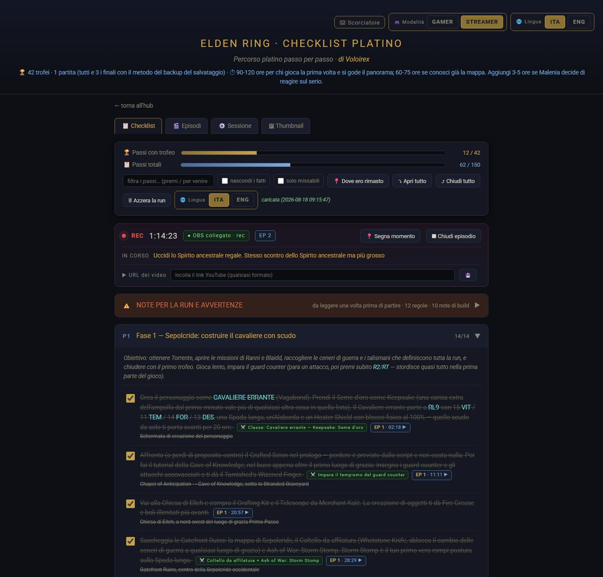
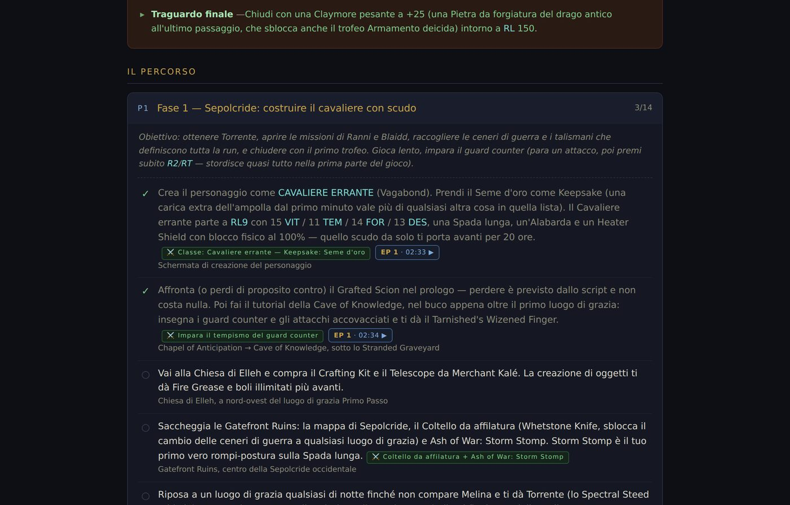

Il platino non si perde per mancanza di bravura. Si perde perché a metà del gioco non ti ricordi più cosa hai fatto.
Platinum Hub tiene il filo al posto tuo: dodici run platino verificate passo per passo, i progressi che si salvano da soli, e — se registri o streammi — ogni casella che spunti diventa un timestamp del video, un capitolo YouTube e una guida cliccabile che porta al minuto esatto in cui quella cosa è successa.
Perché esiste
Una platinum run dura fra le trenta e le centoventi ore, spalmate su settimane. In mezzo c'è la vita vera. Quando riaccendi la console il martedì sera, le domande sono sempre le stesse: dove ero rimasto, cosa non devo dimenticare qui, e questa cosa la posso ancora fare o l'ho persa per sempre?
Le guide online rispondono, ma sono muri di testo che non sanno niente di te. Un foglio di calcolo sa dove sei ma non sa cosa succede dopo. Platinum Hub fa le due cose insieme, e a chi registra la propria run risparmia il lavoro peggiore: rimettere in fila i tempi a video finito.
Le checklist
Ogni passo dice dove sei, cosa devi fare e quale trofeo fa scattare. Niente cronologie da ricostruire a mente.
L'avviso arriva prima del punto di non ritorno, non nel paragrafo dopo, quando la porta si è già chiusa.
Interfaccia e contenuti in italiano e inglese, con i nomi ufficiali delle liste trofei italiane di Sony.
Niente glitch, niente skip, nessuna build copiata da una tier list. Ogni route è pensata per essere rifatta davvero.
In più, note libere per ogni run e una sezione richiudibile con le regole d'oro e la build spiegata a punti.
Le dodici checklist esistono come file HTML singoli: doppio clic e si aprono, senza far partire l'applicazione.
Sulle traduzioni. Dove il nome italiano ufficiale non era verificabile è rimasto l'inglese, di proposito: un nome inglese giusto ti fa trovare l'oggetto, uno italiano inventato te lo fa cercare a vuoto. Sui dodici giochi attuali questo controllo ha scartato 35 traduzioni plausibili ma non ufficiali.

I dodici giochi
Le ore sono la stima per arrivare al platino partendo da zero. I passi sono i punti della checklist: non coincidono con i trofei, perché un trofeo può richiedere più passi e un passo può non dare nessun trofeo ma servire a non perderne uno dopo.
| Gioco | Ore stimate | Fasi | Passi | Trofei |
|---|---|---|---|---|
| Lies of P + Overture | 60–75 h | 15 | 159 | 53 |
| Elden Ring | 90–120 h | 13 | 150 | 42 |
| Sekiro: Shadows Die Twice | 60–70 h | 15 | 104 | 34 |
| Horizon Zero Dawn Remastered | 55–75 h | 13 | 93 | 79 |
| Dark Souls Remastered | 80–120 h | 11 | 87 | 41 |
| Stellar Blade | 50–65 h | 10 | 73 | 45 |
| Black Myth: Wukong | 40–60 h | 8 | 72 | 36 |
| Dark Souls III | 90–120 h | 11 | 68 | 43 |
| Beast of Reincarnation | 30–45 h | 9 | 67 | 46 |
| NieR: Automata | 26–35 h | 9 | 67 | 48 |
| The First Berserker: Khazan | 50–60 h | 9 | 61 | 58 |
| Nioh 3 | 40–60 h | 8 | 61 | 51 |
Se registri o streammi
Questa è la parte che non trovi altrove. Platinum Hub si collega a OBS e legge il timecode reale della registrazione o della diretta: quando segni un task come fatto, l'app scrive quando è successo. Il task successivo parte da quel momento — così ogni task ha un inizio, che è il punto giusto dove mandare chi clicca.
Generati dai marker, già in ordine e con i nomi ufficiali dei trofei. Si copiano e si incollano nella descrizione.
Una sorgente Browser trasparente col task in corso e il successivo. Qualsiasi risoluzione, ultrawide compresi.
Avvia la registrazione, segna un task fatto, annulla, metti un segnaposto — senza alt+tab, col gioco in primo piano.
Un pulsante e ottieni una pagina HTML autonoma con ogni passo linkato al minuto esatto del video giusto.
Il timecode di OBS e l'ora reale. Se OBS cambia protocollo si perde la precisione sulle pause, non i dati.
Senza OBS tutto funziona lo stesso e la modalità streamer usa un cronometro interno.


Com'è fatto
Solo la libreria standard di Python 3. Niente da installare, niente da aggiornare, niente che si rompe fra sei mesi.
Un file SQLite nella tua cartella utente. Nessun cloud, nessun account, nessuna telemetria. Backup con un pulsante.
Il controllo versione avvisa e basta. Su un eseguibile non firmato, un aggiornamento che si installa da solo è indistinguibile da un malware.
L'eseguibile è costruito da una GitHub Action di cui puoi leggere il log, e ogni release pubblica lo SHA256 dello zip.
Le checklist nuove arrivano dal catalogo pubblico: l'app le vede da sola e le installi con un click, verificate contro lo SHA256 pubblicato. Poi è tutto locale, come sempre.
Scaricalo
Prendi PlatinumHub-vX.Y.Z-win-x64.zip dalle Release, scompattalo in una cartella qualsiasi
e avvia PlatinumHub.exe. Non serve installare Python. I progressi stanno nella cartella
utente, quindi puoi scompattare la versione nuova sopra la vecchia senza perdere niente.
Windows mostrerà un avviso al primo avvio («Windows ha protetto il PC»): Ulteriori informazioni → Esegui comunque. L'eseguibile non è firmato, perché un certificato di code signing costa un canone annuale e richiede un'identità aziendale verificata — e questo è il progetto gratuito di una persona sola.
In compenso ogni release pubblica lo SHA256 dello zip, e il file è costruito da una GitHub Action di cui puoi leggere il log riga per riga: puoi verificare che il binario venga esattamente dal codice che stai leggendo.
In alternativa c'è la cartella con app.py e il doppio clic su run.bat:
serve solo Python 3.
Domande
È gratuito, senza pubblicità, senza account, senza abbonamenti e senza acquisti interni. Il repository è pubblico ma il progetto non è open source: il codice è visibile perché tu possa controllare cosa fa il programma prima di eseguirlo, e i diritti restano all'autore. Puoi usarlo e studiarne il codice; non puoi ridistribuirlo, rivenderlo o pubblicarne una tua versione.
Sì, ed è il caso d'uso per cui è nato: si gioca su console e si tiene Platinum Hub aperto sul PC Windows accanto, insieme a OBS. L'app non si collega alla console e non legge i trofei: le caselle le spunti tu, o le spunta una scorciatoia da tastiera mentre stai giocando.
No. Senza OBS le checklist e i progressi funzionano esattamente allo stesso modo, e la modalità streamer usa un cronometro interno invece del timecode reale. OBS serve per leggere il tempo esatto della registrazione o della diretta e per avviare e fermare la registrazione da scorciatoia. Il collegamento usa obs-websocket v5 e resta tutto sul tuo computer.
No. I progressi stanno in un file SQLite in %LOCALAPPDATA%\PlatinumHub\platinum.db.
Nessuna telemetria, nessun cloud, nessun account. Le uniche connessioni in uscita sono due
controlli all'avvio, entrambi verso GitHub e in sola lettura: se esiste una versione più
recente dell'app e se il catalogo
pubblico ha checklist nuove. Se non c'è rete l'app parte comunque, e niente si scarica
mai da solo.
No, non per l'eseguibile: si scompatta lo zip e si fa doppio clic. Esiste anche la versione a
cartella con app.py per chi ha già Python 3 e preferisce avviare run.bat.
Le segnalazioni sui contenuti sono la cosa più utile che puoi fare: se giocando trovi un passo impreciso, un nome sbagliato o un missabile non segnalato, aprire una issue vale più di dieci righe di codice. Le pull request sul codice, invece, non vengono accettate.
È sviluppato e provato su Windows 11, e la pipeline verifica a ogni modifica che l'applicazione parta e risponda, sia su Windows sia su Linux. Non c'è una build per macOS.